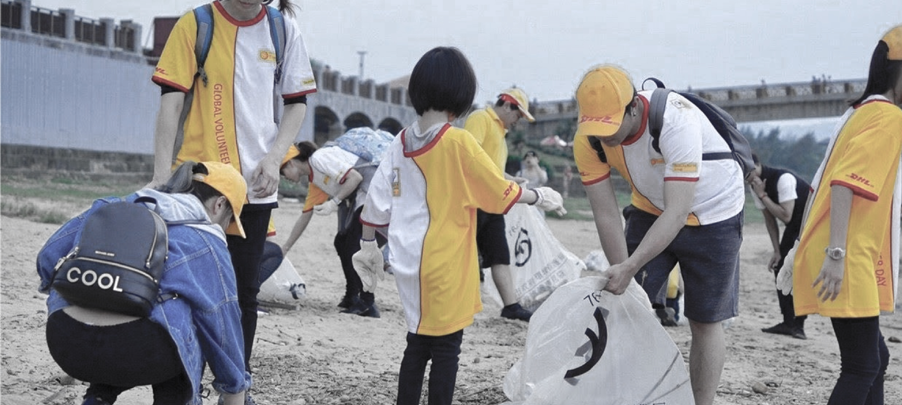
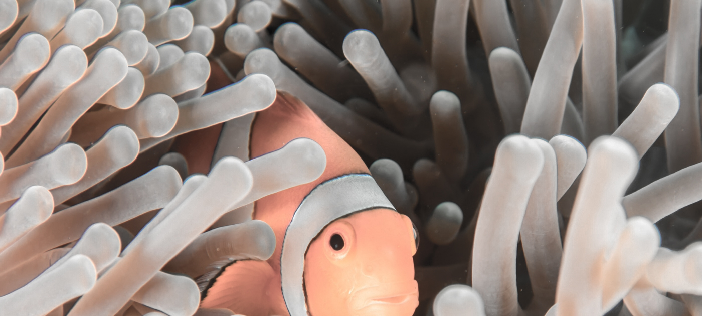
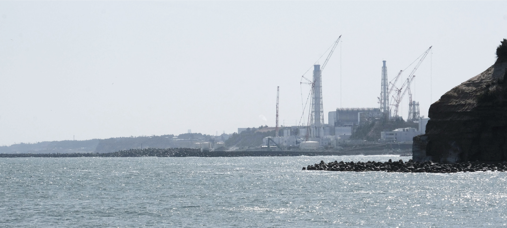
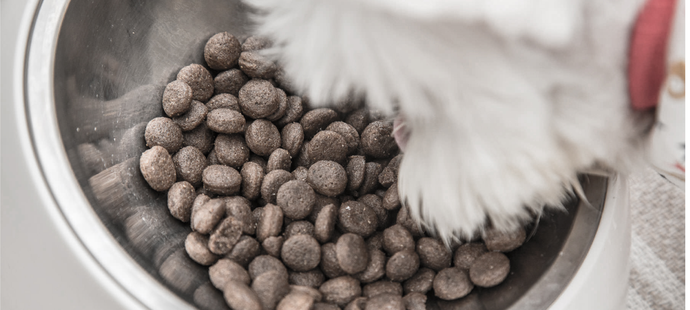
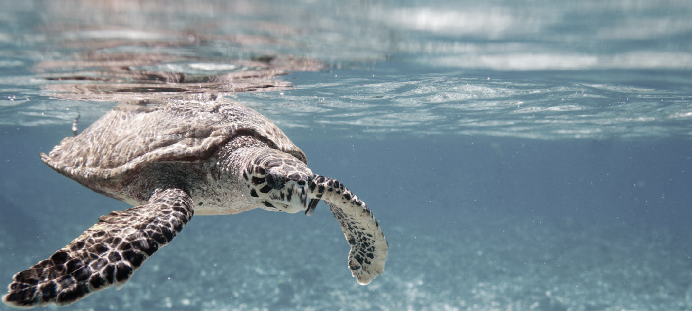
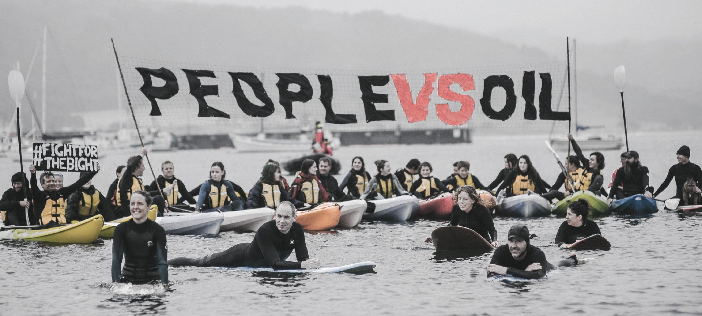

1. PAY ATTENTION TO WHAT YOU EAT

According to the latest statistics from the Food and Agriculture Organization of the United Nations (FAO), Taiwan’s average annual seafood consumption per capita exceeds 30 kilograms, which is much higher than the global average of 18.9 kilograms. Are we really going to eat the last fish in the ocean? From today, learn more about the fish sold in supermarkets and markets, where do they come from? How to capture? Stop buying fish that have been overfished, especially the endangered bigeye tuna, yellowfin tuna and albacore tuna. These three tuna have been listed in the Red Book of the World Conservation Union (IUCN).
2. USE LESS PLASTIC PRODUCTS

Bring your own environmentally friendly cups for drinking water, and bring your favorite cups to the coffee shop! A little carelessness in daily life will produce plastic waste and "plasticize" the ocean. In addition to landfills, these plastics may also end up in the ocean. Seawater is lower than land regardless of temperature or ultraviolet rays. Plastic products are not easy to decompose. Marine life may be eaten by mistake or become entangled by plastic in the sea. In 2011, Greenpeace went to the Arctic to take samples of plastic debris from seawater and found that the profound impact of humans on the environment has already affected the Arctic Ocean.
3. ENERGY SAVING AND CARBON REDUCTION

Why can energy saving and carbon reduction protect the ocean? When the ocean absorbs too much carbon dioxide in the atmosphere, it will increase the acidity of the sea, change the chemical composition of the global ocean, and cause the marine ecosystem to face collapse. Leave your car or motorcycle at home once a week, take public transportation, or go out on a bicycle! Replacing energy-saving lamps in homes and offices and purchasing local products with a lower carbon footprint will make the ocean healthier.
4. LET'S GO TO THE BEACH

Go to the beach every summer, and of course don’t throw rubbish on the ocean or beach. May wish to be more active and join the ranks of beach cleaning! Join an activity initiated by a local community, or simply grab a few friends and set off immediately.
5. WHILE TRAVELING, ALSO PROTECT THE OCEAN

Choose a destination that supports the establishment of a marine protected area for your next trip. When planning transportation, give priority to environmentally friendly solutions, whether it is to reduce long-distance flights or require hotels not to change towels every day, it is easy to do. Also, avoid buying jewelry made of coral and tortoise shells, and don't buy souvenirs made of sharks or any endangered marine life.
6. ATTENTION TO WHAT YOU PUT IN THE SEA

No matter how far your home is from the sea, household wastewater will eventually be sent to the sea with sewage equipment. Sewage treatment can't remove all harmful chemicals. You may wish to use natural methods to wash dishes and clean the kitchen. Warm rice water, homemade detergent with orange peel, and tea seed powder are all good helpers!
7. TAKE CARE OF YOUR LITTLE ANIMALS

Don't forget to pay attention to what you feed the cat in the house. Small animals should also be nutritionally balanced, pay more attention to whether the raw material source of the canned fish you buy has the concept of a sustainable ocean.
8. BECOME THE GUARDIAN OF THE OCEAN

Understand the ocean, marine life, and the importance of establishing marine protected areas, and then share your knowledge with friends around you. Your power can make change happen. Contact the local public opinion representative and tell her/him that you fully support the establishment of the marine reserve and other plans to conserve the ocean. In the next election, vote for a political party that attaches importance to environmental and ecological issues.
9. JOIN GREENPEACE

Become a volunteer or donate member, stand with Greenpeace, stop overfishing, and let the ocean rejuvenate.
10. SHARE THE METHODS OF PROTECTING THE OCEAN
To protect the global ocean from harm, you and I need to continue to care. Greenpeace will continue to guard this blue planet and continue to lobby governments and companies around the world to strengthen ocean protection related policies, including the global ocean protection that will be discussed at the United Nations conference in 2020. District and other international agreements. In addition, our fleet has been investigating and exposing the truth of marine destruction at sea for a long time, including overfishing, illegal operations, ecological destruction, plastic pollution, etc., so that more global guardians can join in the concern and provide concrete evidence to leaders and leaders of various countries. Companies express the urgency of protecting the ocean. You are invited to donate to support Greenpeace's international environmental work!